Ajudo o seu filho a desenvolver uma relação saudável e duradoura com a alimentação!
Acompanho gestantes, bebês e crianças na construção de hábitos equilibrados, promovendo saúde e bem-estar. Agende sua consulta!
Atendimentos à distância para o mundo todo ou presenciais em João Pessoa-PB e Goiana-PE. Vamos marcar uma consulta?
Atendimentos online ou presenciais em João Pessoa-PB e Goiana-PE.
Acompanho gestantes, bebês e crianças na construção de hábitos equilibrados, promovendo saúde e bem-estar. Agende sua consulta!
• Graduada em Nutrição aos 22 anos pelo UNIPÊ;
• Pós-graduada em Nutrição Materno Infantil;
• Apaixonada pela nutrição;
• Pernambucana que se mudou para Paraíba.
Sou fascinada pelo impacto da alimentação tanto durante a gestação quanto nos primeiros anos de vida, reconhecendo como esses cuidados refletem diretamente na saúde ao longo da vida. Acredito que uma nutrição adequada desde a concepção é essencial para o desenvolvimento do bebê e o bem-estar da mãe. Por meio do meu trabalho, tenho a satisfação de orientar gestantes e famílias, contribuindo para que a próxima geração cresça de forma mais saudável.
Um acompanhamento nutricional adequado durante a gestação contribui para a saúde da mãe e do bebê, garantindo um desenvolvimento saudável e prevenindo complicações relacionadas à alimentação.
Com a orientação correta, a gestante pode manter uma alimentação equilibrada que favoreça o crescimento do bebê, fornecendo todos os nutrientes essenciais para o desenvolvimento fetal adequado.
A consulta com uma nutricionista materno-infantil ajuda a prevenir e tratar deficiências nutricionais comuns durante a gravidez, como anemia, deficiência de ferro e ácido fólico, reduzindo riscos para a mãe e o bebê.
É possível aprender estratégias alimentares para minimizar sintomas desagradáveis da gestação, como náuseas, azia e constipação, tornando essa fase mais confortável e saudável para a mãe.
O suporte nutricional adequado também contribui para a produção de leite materno de qualidade, ajudando a mãe a se alimentar corretamente para atender às necessidades do bebê durante a amamentação.
A introdução alimentar do bebê pode ser feita de maneira segura e saudável, com orientações sobre os melhores alimentos e como evitar alergias alimentares, promovendo bons hábitos desde os primeiros meses de vida.
Com a minha orientação como nutricionista, você pode aprender a montar um cardápio equilibrado, rico em frutas, verduras, proteínas e grãos integrais. Isso é essencial para fornecer ao seu bebê todos os nutrientes necessários, como ácido fólico, ferro e cálcio. Também ajudo você a entender as porções adequadas e a fazer escolhas alimentares que beneficiem a sua saúde.

Como nutricionista materno-infantil, ajudo os pais a tornar a introdução alimentar do bebê segura e equilibrada. Oriento sobre o momento certo para começar, a escolha dos alimentos, texturas e combinações adequadas, além de prevenir deficiências nutricionais e alergias. Esclareço dúvidas sobre quantidades, hidratação e equilíbrio entre leite e sólidos, sempre incentivando hábitos saudáveis.
Durante a gravidez, é comum enfrentar deficiências nutricionais, como anemia ferropriva e falta de ácido fólico. Como nutricionista materno-infantil, minha missão é identificar esses riscos e implementar estratégias para evitá-los. Isso pode incluir a recomendação de suplementos, se necessário, e a inclusão de alimentos ricos em nutrientes para manter a sua saúde e a do seu bebê.
Como nutricionista materno-infantil, auxilio as mães na alimentação durante a amamentação, garantindo energia, nutrientes e hidratação adequados para uma produção de leite saudável. Oriento sobre os melhores alimentos para a qualidade do leite e ajudo no manejo de dificuldades como baixa produção ou desconfortos digestivos no bebê. Além disso, ofereço suporte emocional, fortalecendo a confiança da mãe nesse processo.